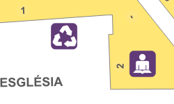
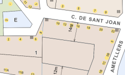
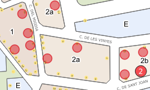

Aquest servidor de mapes mostra cartografia del servei de SIG de l'Ajuntament de Castellbisbal
Webmaster: PSIG
Fonts cartogràfic:
Contacte amb nosaltres: servei.geoportal@castellbisbal.cat
|  Guia urbana |
 Planejament |
|  Activitats |
|
| Optimitzat per Firefox i Google Chrome, resolució de pantalla mínima 1387*856 píxels | |